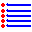

Generació de noves figures
El programa pot generar noves figures. Aquesta opció només està
disponible per a algunes de les modalitats del joc. Podeu fer que el
programa generi una figura amb l'opció de menú Genera figures -> Genera figura (o bé amb la combinació de tecles Ctrl+R). El programa generarà una figura nova i podreu intentar resoldre-la inmediatament.
Amb l'opció Genera figures -> Genera figures (o bé amb la combinació de tecles Ctrl+Q) podreu generar figures massivament (fins a 300 d'un cop). Només heu d'introduir el nombre de figures que desitjau generar.
El procés de generació és bastant aleatóri: tot i així, és possible que
es generi alguna figura repetida. Per això, amb l'opció de menú Genera figures -> Comprova figures
podreu revisar les figures generades. Amb aquesta pantalla podeu fer
que el programa comprovi si hi ha figures repetides entre les figures
generades o bé si alguna de les figures generades ya està en la
colecció de les figures del programa. Després de fer la comprovació, el
programa marca automàticament les figures repetides per eliminar-les.
Podeu marcar altres figures (per exemple alguna en què les peces no
estiguin col·locades formant una única figura) amb el botó d'eliminació
( ).
).
Totes les figures generades reben el nom «AUTO»,
seguit d'un nombre generat a l'atzar. Podeu fer que el programa
renumeri correlativament les figures de forma automàtica amb el botó .
Una vegada fets els canvis, podeu desar les dades en un arxiu. Per jugar
amb les figures generades, només heu de fer servir l'opció de menú Aplicació->Carrega figures d'un arxiu i seleccionar l'arxiu desitjat.